UTTAR KANNADA WATERFALLS
MAGOD FALLS
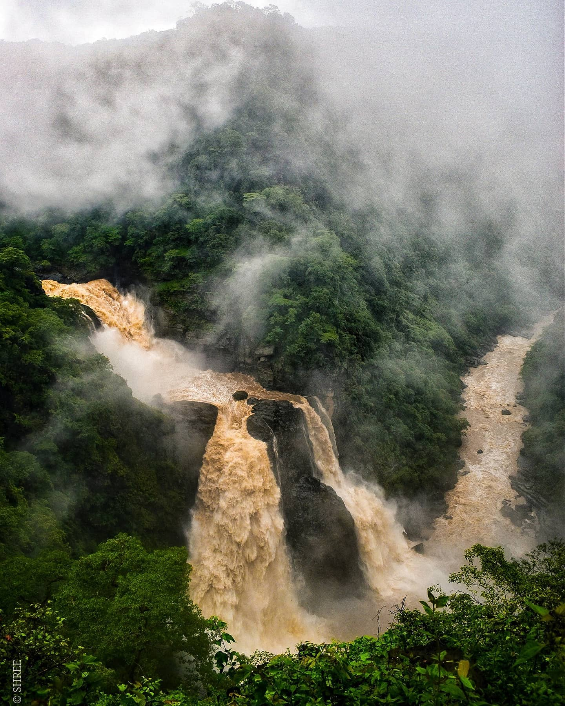
Magod Falls is a popular waterfall in North Canara (Uttar Kannada)
district, in Yellapur taluk, on river Bedti. Here, the Bedthi River takes two
distinct leaps, to hurtle from a height of 650 feet into a rocky ravine. The
thickly wooded countryside, the roar of gushing water and a beautiful view
combine to make this spot an ideal choice for outings. Well built walkway
with handrails is available from the parking area till Magod Fall viewpoint
1 Reasons to Visit Magod Waterfalls
•Kavade Kere (lake) is a worthy stopover enroute to Magod
Waterfalls. Kavade Kere is 6 kms from Yellapur, 10 kms before Magod
Waterfalls.
•Jenukallu Gudda Hiking: 4 kms from Magod Waterfalls
•Vanadurga Temple, 1.3 kms from Magod Waterfalls
•Kallare Waterfalls, 1 km form Magod Waterfalls
•Timing Magod Waterfalls can be visited between 9 AM and 6 PM on all
days.
Best Season to visit Magod Falls
Magod Waterfalls is best visited
between July and December. Water levels will be minimal during summer
months.
Places to visit near Magod Falls
Sathodi Falls (38 kms), Banavasi (83
kms), Unchalli Falls (92 kms) and Dandeli (70 kms) can be visited along
with Magod Waterfalls.
How to reach Magod Falls
Magod Waterfalls is 442 kms from
Bengaluru, 107 kms from district headquarters Karwar and 86 kms from
Hubballi (nearest airport and railway station). Buses are available in
Yellapur from Karwar, Hubballi or Bengaluru. Taxis can be hired to reach
Magod Waterfalls, 17 kms from Yellapur.
Places to stay near Magod Waterfalls
Hotels are available in Yellapur
city.
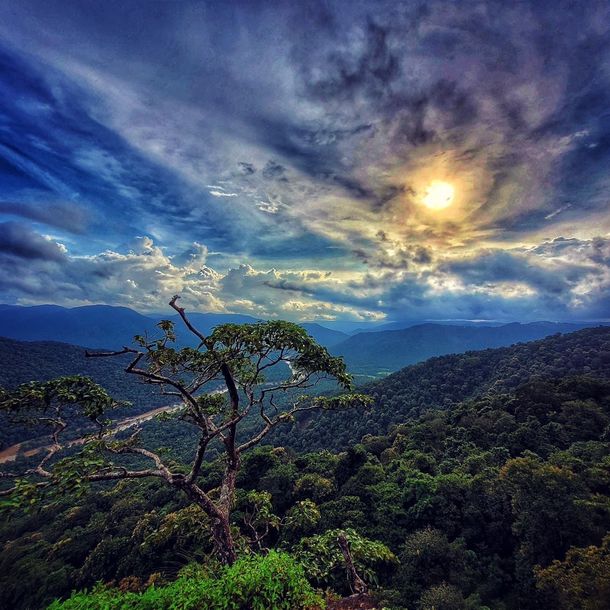
The beauty of Nature which is hidden from humans
The place is remote with a magnificent view of the falls. However, You will
find a large lake on the way to Magod Falls known as Kavade Kere which
has an area of 60 acres. Indeed, it is an ideal picnic spot with a beautiful
view. The fall flows down into a rocky path from the height of 650 feet.
Even here tourists can reach the bottom of the waterfalls. However, it is a
little risky during the monsoon season. Hence, it is better to enjoy this falls
from the viewpoints
How to go?
Magod Falls is located 80 km from Karwar and 17 km from the town of
Yellapur. It is easily accessible by rail and road from the towns. It is located
amidst green nature with a magnificent view. Idle time to visit the falls is
from July to November. The waterfalls are 3km from the village Magod.
Autos or private vehicles are the only transport from Yellapur to reach
Magod Falls.
While visiting the Magod Falls, one can also visit the nearby sites like
Jenukallugudda (honey rock hillock) and Kavadikere (8 km from Yellapur)
which is close to Yellapur and known for the natural beauty of the place.
Location
Magod falls Road, Magod, Karnataka 581359.

SATHODI FALLS
Sathodi Falls is a picturesque rectangular-shaped waterfall in the
Western Ghats. Several unknown streams converge near Kallaramane Ghat
to become Sathodi Falls and plunge from a height of about 15 m to create a
picturesque picnic spot. In between the bushes and the rocky terrain, there
are small pathways leading to the waterfalls.
It is a waterfall in India that is formed by several unnamed streams near
Kallaramane Ghat, Uttara Kannada District, near Yellapur, Karnataka, and
32 km from Yellapur. It is about 15 metres (49.2 feet) tall. The stream then
flows into the backwaters of the Kodasalli Dam, into the Kali River.
It is about 25 km from Yellapur. Till Kumbral which is about 5 km from
falls, the road is moderately good; the rest 5 km will be tough one as it is
tiny and in pathetic condition. Road work is in progress which is expected
to be completed at the end of the year 2019.
Reasons to visit Sathodi Falls
•Active all through the yearThe Falls is located in the dense Western
Ghats and remains active for the most part of the year
•Safe to take a dip/swimWater below the falls is not too deep and is ideal
for a dip/short swim. However, caution is advised, particularly with
children.
•Picnic SpotSathodi Falls is an ideal picnic spot with family, because of
beautiful surroundings
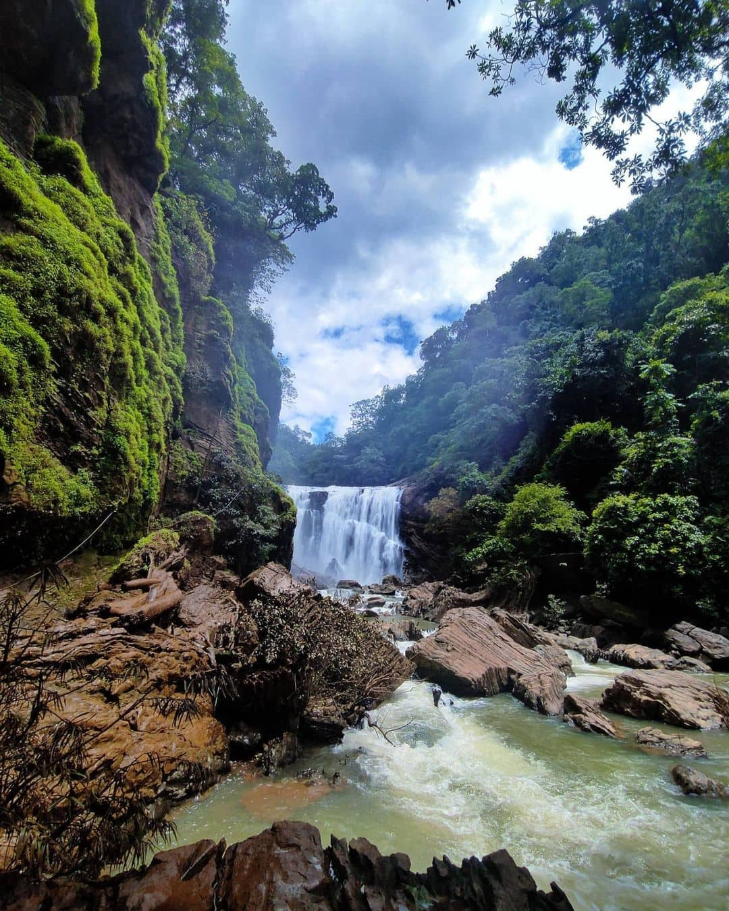
Stay
Few home stay options are available near the falls. Yellapura city (27 kms)
has basic accommodations. More stay options are available in Dandeli (80
kms), Hubballi (97 kms) and Sirsi (75 kms).
How to reach
Sathodi Falls is 452 kms from Bengaluru and 90 kms from district HQ
Karwar. Hubballi is the nearest airport and railway station (97 kms). Buses
are available till Yellapura, from where taxis can be hired to reach the falls
(27 kms).
Nearby
Dandeli (80 kms), Anshi National Park (70 kms), Attiveri Bird
Sanctuary (70 kms) and Ulavi Caves (88 kms) are some of the interesting
places in the region worth visiting along with the falls.
Home stay near to sathodi falls
Sathodi Jungle Homestay: Sathodi Falls Road, Yellapur, Karnataka
581359.
Best time to visit
The best time to visit the Sathodi waterfall is from November to April. It is
not a good idea to visit the Sathodi falls during the monsoons as it might be
extremely slippery and dangerous.
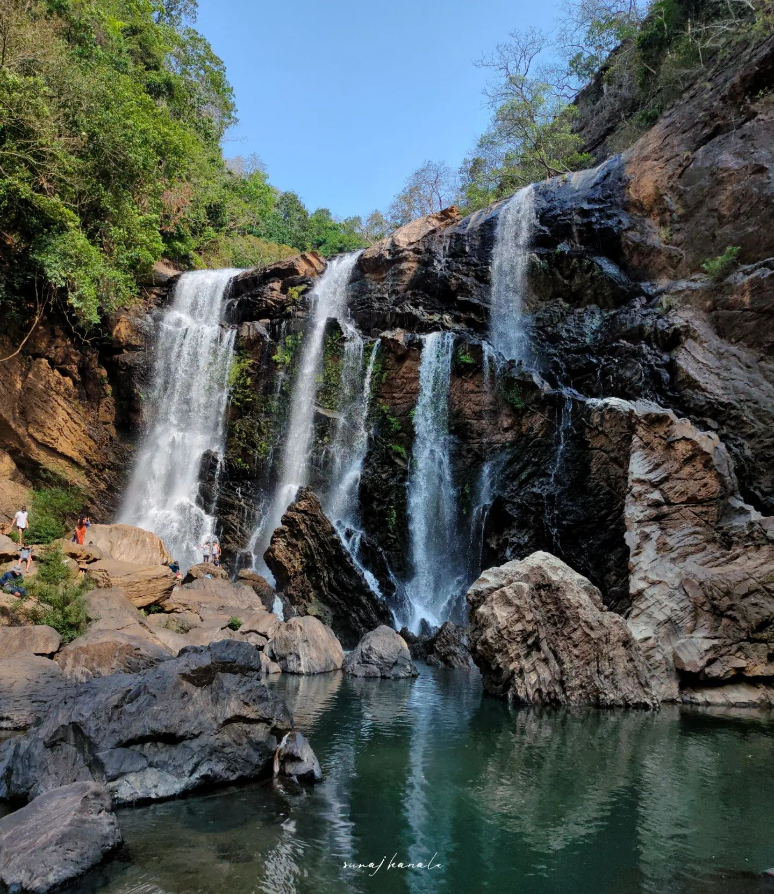
Location
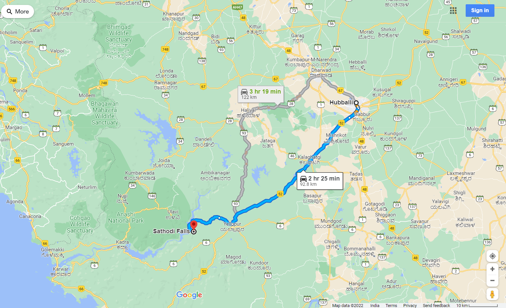
DEVKAR
Devakar Falls also called Vajra Falls or Devamala Falls is a water falls
located in Uttara Kannada District, Karnataka, India and it is visible from
Devakar village. There are no well developed road to reach the water falls
and during rainy season it is not possible to reach. The height of water falls
is about 200 meters and after falling the water reaches Kadra
reservoir.During October there will be more water in the water falls when
compared to water volume during February

Devakar Waterfalls is situated on a small island called Devakar which is
surrounded by the Kadra Dam backwaters. The height of the waterfalls is
about 300 feet and the water of the falls reaches Kaiga reservoir. While
falling, it glows like a Diamond (Vajra), so locally this falls is called
Vajramala falls. This waterfall is originated from the Bare stream. Due to
the lack of publicity, this beautiful fall is still unknown to a lot of people.
There is no well-developed road to reach the falls and during the rainy
season, it becomes inaccessible. One has to cross the backwaters of Kadra
reservoir to reach Devkar Village. There is a bus that runs from Kadra to
Devkar Bus Stop, from there one has to cross the backwaters of Kadra Dam
by boat. The 5 km trek from Devkar village to Devkar falls is moderate to
difficult. The path runs through muddy tracks covered by thick forests.
How to Reach Devkar
By Rail
There is no railway station near to Devkar in less than 10 km. Sagar
Jambagaru Rail Way Station (near to Sagar) are the Rail way stations
reachable from near by towns. How ever Hubli Jn Rail Way Station is major
railway station 129 KM near to Devkar
By Road
Sagar , Sirsi are the nearby by towns to Devkar having road connectivity to
Devkar
Best time to visit devkar falls
The best time to visit Devkar falls is post-monsoons (November - February).
Trekking routes
There are few avenues to explore this fall
1.Yellapur - Hebbara Kumbri - Eerapur - Devakar village: This trail
demands to descend the 'Benda ghatta' hill for about 6 KMs to reach
Devakara village. With another 4 KM’s trek from the village, one can be
reached to the falls. Although this is the difficult trial but top of the 'Benda
ghatta hill' is known to offer amazing views of “Kali River Valley” and
Kaiga.
2.Yellapur - Kadra - Devakar cross - Cross Kali river backwater in a boat –
Devakara village: This is the popular trail which demands ~4-5 KMs trek to
reach the bottom of the falls from Devakar village.
3.Yellapur - Beegar - Kanur(kanoor): This trail leads to the top of the
waterfalls. From here descending valley to reach the bottom of the falls is
dangerous and not advisable.
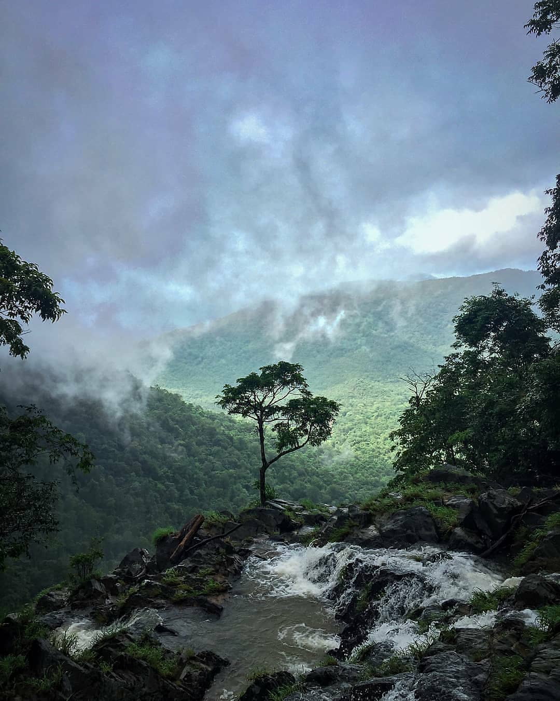
View of Upper section
Location
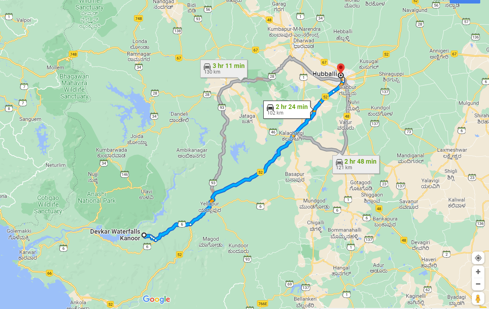
Devkarfalls, Karnataka 581337
SHIRLEY FALLS
1 Shirley Falls or Shirale Falls is a scenic waterfall located near
Yellapur, in Uttara Kannada district of Karnataka, India. Just 15 minutes
drive from small town Yellapur and 30 minute scenic trek follows to
reach Shirley Falls. Waterfall is hidden inside the Arabail ghat, Many
tourists and travellers are unaware about this falls, one has to trek down
a muddy road of 2 kms to reach the falls. Trek to the falls walking through
the jungle, speaking with the nature, under the private areca palms is
scenic. Shirley Falls is located at approx 13km from Yellapur, 63km from
Gokarn, 83km from Hubli, 148km from Belgaum, 161km from Goa,
437km from Bengaluru, 274km from Mangalore.
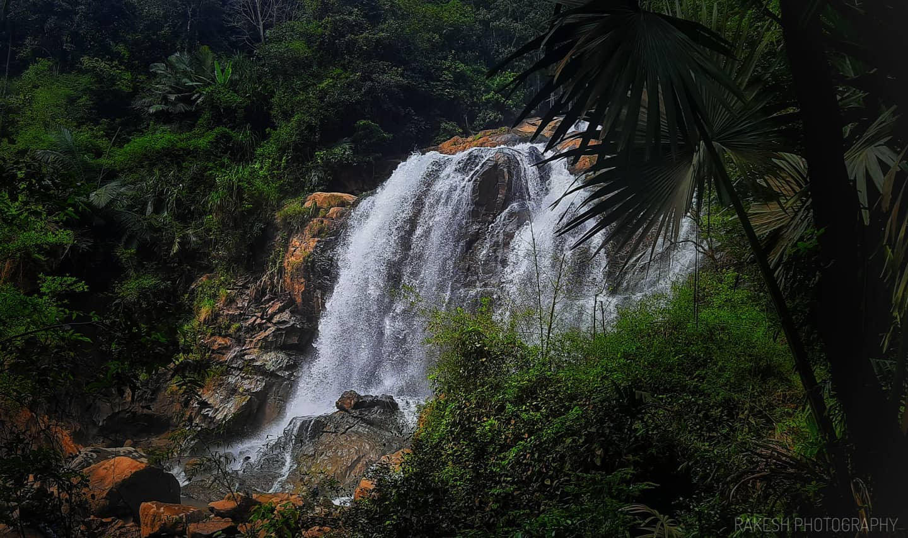
From yellapur town, keep going on NH63 which is the Yellapur –
Ankola highway. . Keep going for 19-20 kms and you will get a cross (
Shirley cross ). It will be beside a bus stand. Shirley is a very small village
and the number of houses there is very less. After you take a turn in the
cross, you have to further go down for 4-5 kms. Two wheelers go down
to a certain point ( 2 kms, land mark is a House ) but, the road is terrible.
After you reach the landmark, you have to pay rupees 10 in the house
and go further. After 5-10 minutes of walk, you will get the falls, you
will hear the sound of the falls far behind.
we have to go 2.5kms in forest (mud-road) downwards. It is better to go
by walk only. 4 wheelers are not going in this road. 2 wheeler is also
difficult in this mud-road. After 2.5kms you will get one areca-nut
plantation. From that areca-nut plant you have to walk downwards, after
some distance you will get Shirley fall
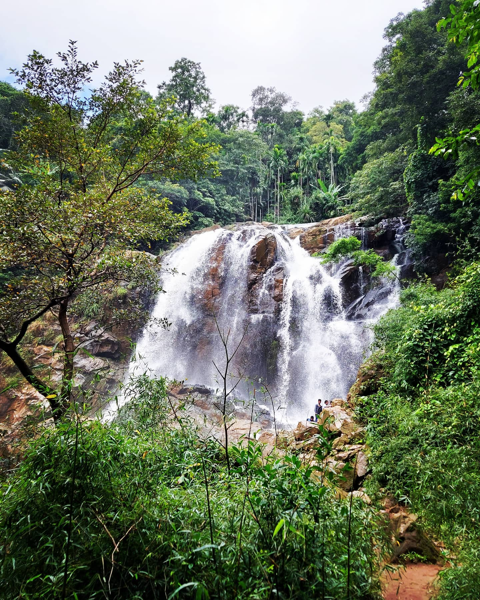
Best time to visit
The best time to visit the falls is the rainy season (June – September)
and the winter season (January to February).
Though it can get really dangerous in the rainy season – the view of the
falls and the water falling from 100 feet is beautiful and worth the trek.
Location
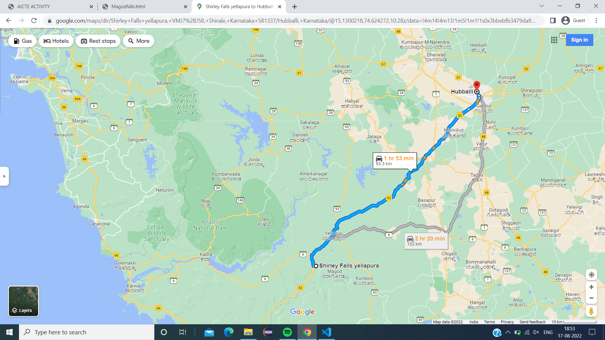
Shirale, Karnataka 581337.
VIBHUTHI FALLS
Vibhuthi Falls is located in Achave Gram panchayat,Ankola taluk of
Uttara Kannada district in Karnataka, India. The word "Vibhuthi" means
limestone. The water in this falls comes past limestone rocks near Yana and
so the falls is called as "Vibhuthi Falls". Nearest towns near Vibhuthi falls
are Sirsi , Kumta, Ankola, Gokarna.
The falls are in the Karavali region of Karnataka, accessible by road from
SH143 of Karnataka State. The nearest railway station is in Kumta, about
40 km from Vibhuthi falls.
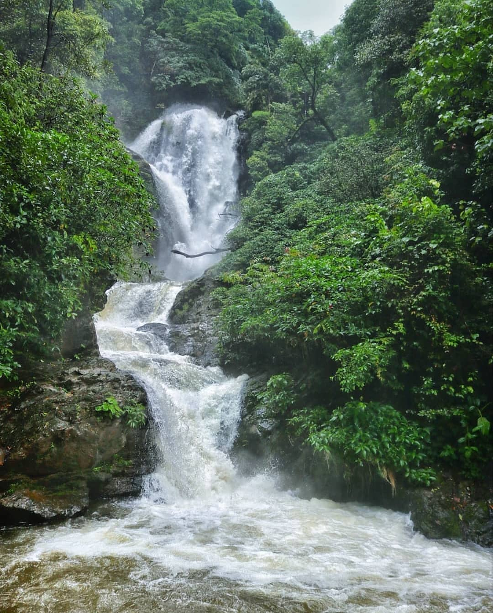
Near places to visit:
Yana:
This is a pilgrimage spot with a cave temple dedicated to the Goddess
Chandrika. During Shivratri, the cave temple witnesses ten days of
celebrations.
Unchalli Falls:
Created by the river Aghanashini, this waterfall is about
30km from Sirsi. Water flows down a height of 116m creating an enchanting
vision, especially during the monsoons.
Benne Hole Falls: This waterfall is also created by the river Aghanashini.
The area is popular with trekkers and nature lovers.
Gokarna Beach:
The non-commercial beach is unique in terms that it is
flanked by mountains on one side and the Arabian Sea on the other.
By Road
The Vibhuthti Falls are about 400kms away from Bangalore and 50kms
from Sirsi. KSRTC buses and private taxis ply regularly between Sirsi and
the Vaddi cross. From here, the Waterfall is a short walk away.
By Rail
Sirsi is the closest railway station to the Vibhuthi Falls. The station is around
44 kilometers.
By Air
At a distance of 252km, the Mangalore International Airport is the closest
airport.
Best Time to Visit Vibhuthi Falls
The best time to visit the waterfall is between October and March. At this
time the water levels are at their highest and gush over the rocks.

Location
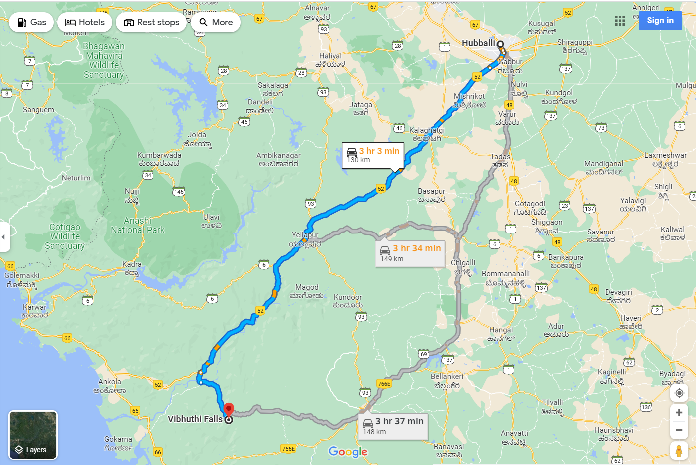
Achave Gram panchayat,Ankola taluk of Uttara Kannada district in
Karnataka, India.